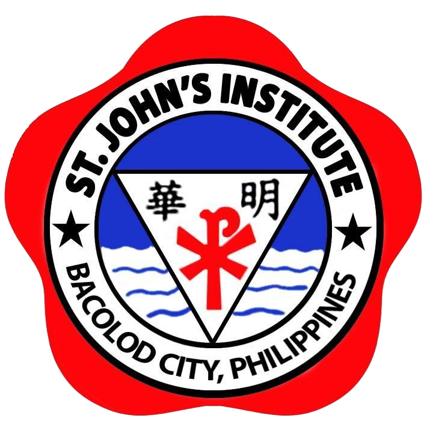

Top Schools in Bacolod City
St.John's Institute

Welcome to Hua Ming St. John’s Institute (or Hua Ming) is the only Chinese Catholic-inspired school in Bacolod City founded by Msgr. John Liu and Msgr. John Su. As an integrated school, we offer pre-elementary, elementary, junior high school, and senior high school programs. We operate two campuses, the main campus in Capitol Shopping Center, Bacolod City and the other campus in Ayala North Point, Talisay City.
Next Page →
←Previous Page